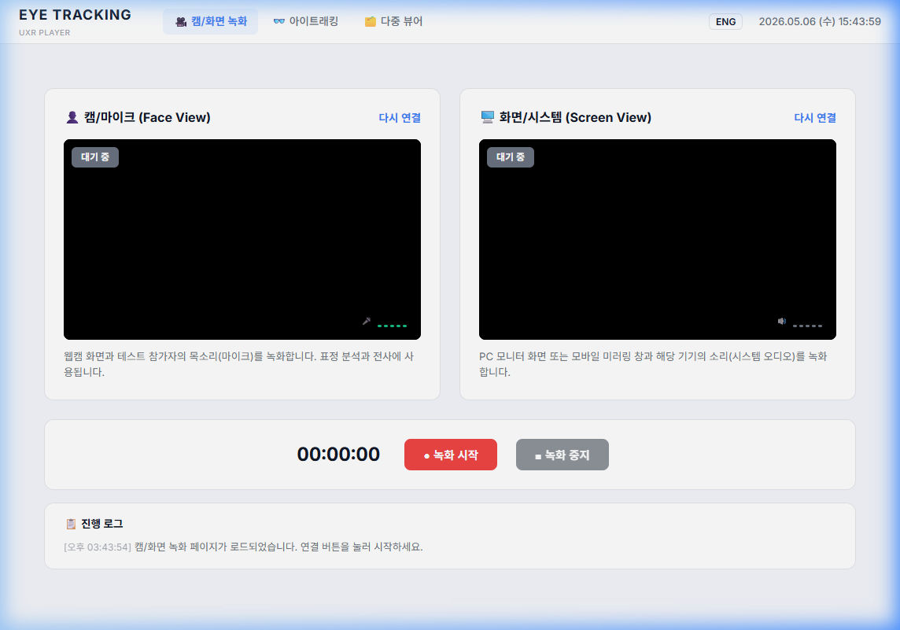
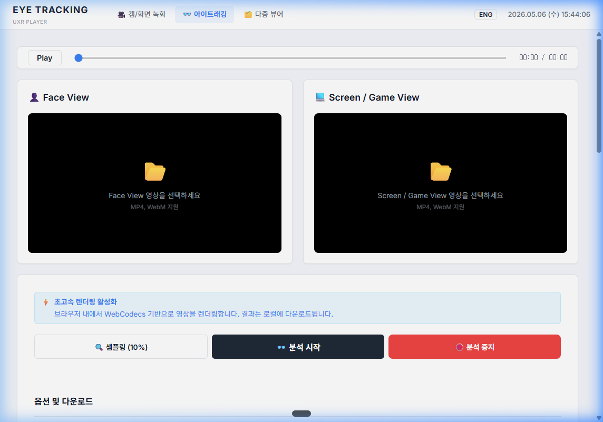
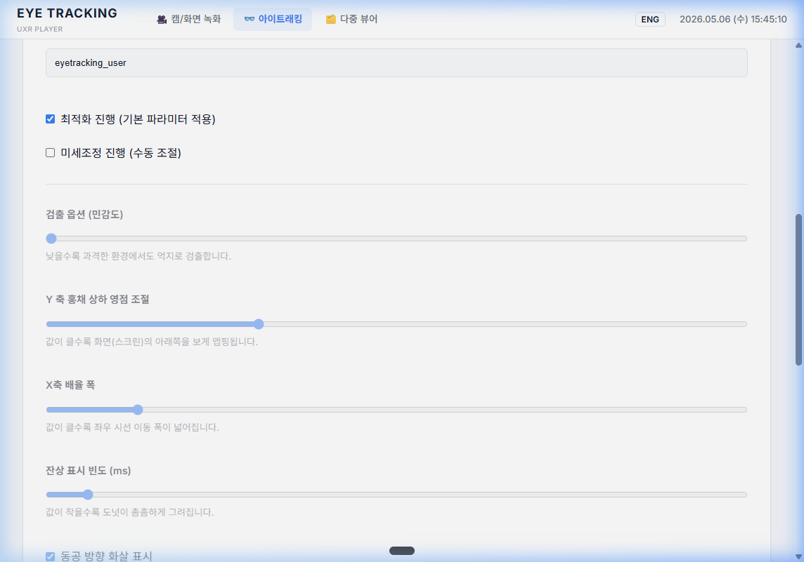
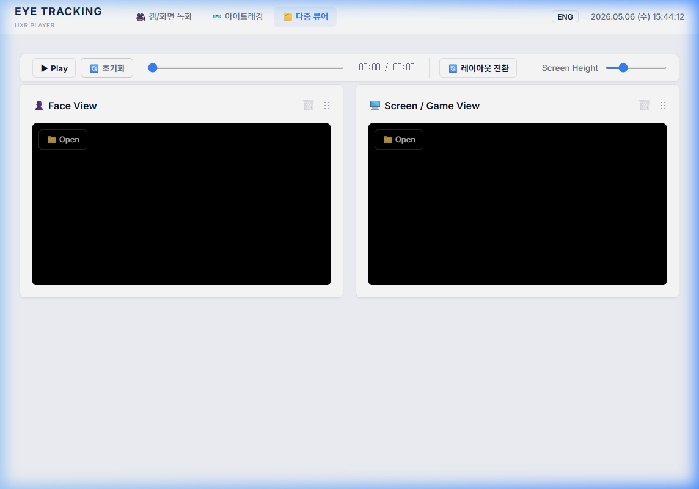

📖 User Guide
브라우저에서 바로 사용하는 UXR 아이트래킹 도구 사용 가이드
🎥 녹화
→
👓 분석
→
🗂️ 리포팅
사전 준비 사항
PC Chrome 브라우저 (최신 버전 권장)
웹캠 (내장 또는 외장)
마이크 (음성 녹음용)
Step 1: 캠/화면 녹화
웹캠과 화면을 동시에 녹화하여 UX 리서치 데이터를 수집합니다.

1-1. 웹캠(Face View) 연결
- "다시 연결" 버튼을 클릭합니다.
- 브라우저에서 카메라/마이크 접근 권한을 허용합니다.
- 연결 성공 시 상태 배지가 초록색 "연결됨"으로 변경됩니다.
- 오디오 레벨 미터(🎤)가 활성화되어 마이크 입력을 확인할 수 있습니다.
1-2. 화면(Screen View) 연결
- "다시 연결" 버튼을 클릭합니다.
- 공유할 화면을 선택합니다 (전체 화면 / 창 / 탭).
- ⚠️ "시스템 오디오 공유"를 반드시 체크하세요! 체크하지 않으면 기기 소리가 녹음되지 않습니다.
- 연결 성공 시 상태 배지가 초록색 "연결됨"으로 변경됩니다.
1-3. 녹화 시작 및 중지
- "● 녹화 시작" 버튼을 클릭하면 녹화가 시작되고 타이머가 동작합니다.
- 녹화 중에는 상태 배지가 빨간색 "● 녹화 중"으로 변경됩니다.
- "■ 녹화 중지" 버튼을 클릭하면 녹화가 종료됩니다.
- 녹화 파일이 자동으로 다운로드됩니다:
record_face_날짜_시간.webm,record_screen_날짜_시간.webm
1-4. 진행 로그 확인
- 하단의 "📋 진행 로그" 패널에서 모든 동작 이력을 실시간으로 확인할 수 있습니다.
Step 2: 아이트래킹 분석
MediaPipe 기반으로 녹화 영상에서 시선을 추적하고 결과 영상을 생성합니다.


2-1. 영상 불러오기
- Face View 영역(📂)을 클릭하여 Face 녹화 파일을 선택합니다.
- Screen / Game View 영역(📂)을 클릭하여 Screen 녹화 파일을 선택합니다.
- 지원 포맷: MP4, WebM
2-2. 분석 옵션 설정
- 파일 이름: 생성될 결과 파일의 이름을 지정합니다.
- 최적화 진행 (기본): 기본 파라미터가 자동으로 적용됩니다. 대부분의 경우 이 모드로 충분합니다.
- 미세조정 진행: 수동으로 파라미터를 조절할 수 있습니다 (민감도, Y축 영점, X축 배율 등).
2-3. 샘플링 및 분석 실행
- "🔍 샘플링 (10%)": 전체 영상의 10%만 빠르게 분석하여 결과를 미리 확인합니다.
- "👓 분석 시작": 전체 영상에 대해 시선 추적 분석을 시작합니다.
- "🛑 분석 중지": 진행 중인 분석을 중단할 수 있습니다.
- 분석 완료 시 결과 영상이 자동으로 다운로드됩니다.
Step 3: 다중 뷰어
Face View와 Screen View를 동기화하여 통합 분석합니다.

3-1. 영상 불러오기
- 각 카드의 "📁 Open" 버튼을 클릭하여 영상 파일을 선택합니다.
- Face View, Screen View 각각 별도로 영상을 불러올 수 있습니다.
3-2. 동기화 재생
- "▶ Play" 버튼으로 모든 영상을 동시에 재생/일시정지합니다.
- 마스터 타임라인 슬라이더로 모든 영상의 재생 위치를 동기화합니다.
- "🔄 초기화" 버튼으로 모든 영상을 초기 상태로 리셋합니다.
3-3. 레이아웃 및 위젯 관리
- "🔄 레이아웃 전환": 세로/가로 레이아웃을 토글합니다.
- Screen Height 슬라이더로 카드 높이를 조절합니다.
- 카드 헤더의 ⋮⋮ 핸들을 드래그하여 순서를 변경할 수 있습니다.
- 🗑️ 아이콘으로 불필요한 위젯을 제거할 수 있습니다.
💡 Tips & FAQ
권장 브라우저
PC Chrome 최신 버전에서 최적의 성능을 제공합니다. WebCodecs API를 지원하는 Chrome 94 이상을 권장합니다.
녹화 파일 포맷
WebM 포맷(VP9 코덱)으로 저장됩니다. 필요 시 별도 변환 도구로 MP4로 변환할 수 있습니다.
시스템 오디오 문제
화면 공유 시 "시스템 오디오 공유" 옵션이 보이지 않으면 "전체 화면" 또는 "크롬 탭"을 선택하세요.
미세조정 추천값
대부분의 경우 기본 최적화 모드로 충분합니다. 결과가 부정확할 때만 미세조정을 사용하세요.